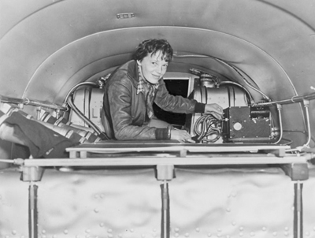
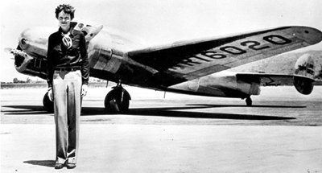
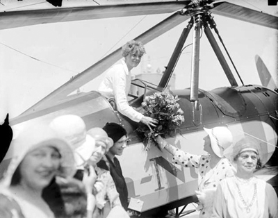
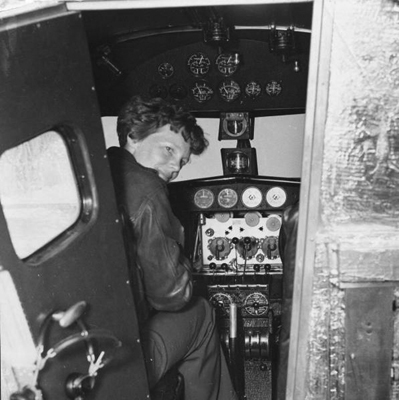
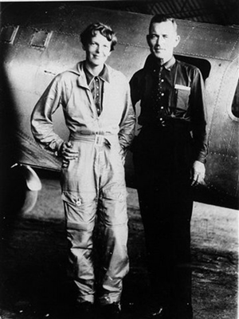

“Yıldızlar neredeyse dokunabileceğim kadar yakındı. Daha önceden hiç bu kadarını bir arada görmemiştim. Hayatım boyunca, uçuşun cazibesinin her şeyden daha güzel olduğuna inandım. Buna o gece ikna olmuştum.”
Amelia Earhart
(Atlantik’i bir başına geçtiği geceyi anlatırken)
İlginçtir, Amelia ilk kez on yaşında, bir kasaba fuarında uçak gördüğünde hiç etkilenmemişti. “Bir tahta ve metal karışımıydı. Ve hiç de olağanüstü bir şey gibi görünmemişti” diyordu. Neredeyse on yıl kadar sonra, bir akrobatik uçuş gösterisinde, havacılığa duyduğu aşkın ilk tohumları atıldı. Uçak pilotlarından biri, bir tepenin üzerinden kendisini seyretmekte olan Amelia ve arkadaşını görünce, muhtemelen genç kızlara hava atmak için, keskin bir manevrayla iki arkadaşın üzerine dalışa geçmiş, yaklaştığında ise neredeyse uçağın kanatlarıyla ıslık çalarak ve bu arada selam çakmayı da unutmayarak, tekrar havalanmıştı. Pilot, Amelia’nın ya da arkadaşının kalbini çalamamıştı belki ama işte o an kahramanımız, kalbini havacılığa kaptırmıştı. Uçak, tiz bir sesle üzerlerinden tekrar tırmanmaya başladığında, Amelia, korku ve coşkuyla karışık bir hisse kapılmıştı. “Sanki o kırmızı küçük uçak, bizi sıyırıp geçerken kulağıma bir şey fısıldamıştı” diyecekti yıllar sonra.
28 Aralık 1920, Amelia’nın hayatının dönüm noktası oldu. Moda tabirle, o günden sonra bir daha hiçbir şey eskisi gibi olmayacaktı. Zira Pilot Frank Hawks, Amelia’ya ilk uçuş deneyimini tattırmıştı. “Yerden 300 metre kadar havalanmıştık ki, işte o an, hayatımın geri kalanında gökyüzünde olmam gerektiğine karar verdim. Uçmak zorundaydım” diyordu, o günü anlatırken.
Her ne kadar genç kız, ideallerine inançla sarılsa da bu iş, o dönemin Amerikası’nda o kadar kolay değildi. Önyargıları bir kenara bırakın, her şeyden önce maddi sorunlar, Amelia ile gökyüzü arasındaki mesafeyi uzattıkça uzatıyordu. Lakin tam bir ‘erkek Fatma’ olan Amelia, kendisine karşı çıkılmasına alışkındı. Geleneksel davranış kalıplarını yıkmakta pek mahir olan genç kız, kanatsız yaşamında da ele avuca sığan biri değildi esasında; ağaçlara tırmanıyor, sırtına yüklendiği kızakla kendisini yamaçlardan aşağı salıyor, 22 kalibrelik tüfeğiyle farelere tarlaları dar ediyordu! Erkek Fatmalığının altını çizmemiz sebepsiz değildi doğrusu. Zira Amelia’nın ilginç bir hobisi de vardı. Film yönetmenliği, hukuk, reklamcılık, idarecilik ve makine mühendisliği gibi, o dönem için, erkeklerin egemenlik ilan ettiği sahalarda başarılı olan kadınlarla ilgili gazete kupürlerinden oluşan bir günlük tutuyordu.
1915’te Hyde Park High School’dan mezun olduğunda dünya milletleri, ilk büyük savaşa girmişlerdi. Amelia bu yıllarda Kanada’da bir askeri hastanede hemşire olarak çalışmış, ardından da kısa bir süre kamuda görev yapmıştı. 3 Ocak 1921’de gördüğü ilk uçuş dersinin ardından, altı ay boyunca deli gibi çalışarak ilk uçağını almaya muvaffak oldu. Amelia, ikinci el, sarıya boyalı ve iki koltuklu Kinner Airster’ına ‘Kanarya’ (Canary) ismini vermiş ve onunla doğruca gökyüzünün yolunu tutmuştu. Bu mütevazı uçakla 14 bin feet’e (yaklaşık 4 bin 900 metre) yükselip kadınlar dalındaki ilk rekoruna da imza atmıştı. Bunu diğer rekorları, hem de inanılmaz bir hızda takip edecekti.
Bir telefonla hayatı değişti
1928 yılının Nisan ayıydı. Amelia, kendisine gelen telefonu bağlamak isteyen sekretere, “Şu an meşgulüm” diye karşılık verdi. Yine kendisine kötü bir şaka yapılacağını düşünüyordu. Sekreterin telefonun acil olduğu uyarısıyla görüşmeyi kabul etti. Başlangıçta ahizenin ucundaki sesin, uçuş tutkusunu bilen ve kendisini işletmeye çalışan bir arkadaşına ait olduğunu düşünse de çok geçmeden işin ciddiyetini anladı. Kendisine yöneltilen soru gayet netti:

Amelia, uçuş öncesi ekipman kontrolünde
“Atlantik Okyanusu’nu uçarak geçecek ilk kadın yolcu olmak ister misin?”
Bir an için aklına uçakta ‘fazla bagaj’ olarak bulunacağı düşüncesi gelse de pek duraksamadan cevabını verdi. “Evet!”
Ayağının tozuyla New York’a giden Amelia, projenin mimarları ile, daha sonradan maceranın kitabını basacak yayıncı George P. Putnam ve yolculuğun basın kampanyasını yürütecek isimlerle görüştü. Her konuda mutabakata varılmıştı. Amelia, pilot Wilmer “Bill” Stultz, yardımcı pilot ve uçuş mühendisi Louis E. “Slim” Gordon’un eşliğinde, 17 Haziran 1928’de Newfoundland’daki Trepassey Harbor’dan, ‘Dostluk’ (Friendship) isimli Fokker F7 ile havalandı. 21 saatte Atlantik’i geçen ekip, İskoçya Burry Port’a indi. Günümüz ticari jetlerinin bu mesafeyi 7 saatte aldığını göz önünde bulundurursak, üçlünün bu uçuşunun, o zaman bile başlı başına büyük bir başarı olduğu görülür. Seyahat tüm dünyada ses getirdi. Ekip, Amerika’ya döndüğünde New York’ta resmigeçitle karşılandı ve Başkan Calvin Coolidge’ın Beyaz Saray’da kendi onurlarına verdiği resepsiyona katıldı. Amelia, uçağı kendisi kullanmasa da Atlantik’i uçarak geçen ilk kadın yolcu olmuştu. Devamı gelecekti...

Hiçbir zaman çağdaşı pilotlar gibi giyinmedi, şıklığından asla taviz vermedi!
O günden sonra, Amelia’nın hayatı gökyüzünde geçecekti. Cleveland Kadınlar Uçuş Derbisi’nde üçüncü olmasının ardından Atlantik seyahati esnasında tanışıp arkadaşlığını ilerlettiği yayıncı Putnam ile hayatını birleştirdi. Bir gün, evlilikle bunca hareketli bir hayatı nasıl bağdaştırdığını soranlara, “Evlilik çift kontrollü bir ortaklıktır” diyecekti.
En az Amelia kadar macera düşkünü olan Putnam, karısının bu sıra dışı tutkusuna en büyük desteği verenlerin başında geliyordu. Karı koca gizli bir plan üzerinde çalışıyordu: Amelia, bu kez Atlantik’i tek başına geçecekti!
Atlantik’i geçiyor... Tarihe de geçiyor...
20 Mayıs 1932’de Newfoundland Harbor Grace’den havalanan Amelia, Paris’e inme hedefiyle gökyüzüne tırmanışa geçti. Güçlü kuzey rüzgârları, buzlu hava koşulları ve mekanik sorunlar, genç kadını canından bezdirse de hedefinden döndüremedi. Ufak bir sapma olmuş; Amelia, Paris yerine, İrlanda Londonderry yakınlarında bir otlağa inmek zorunda kalmıştı. Ama bunun hiç önemi yoktu. Sonuçta 35 yaşındaki Amelia Erhart, Atlantik’i tek başına geçen ilk kadın olarak gazete manşetlerini süslemeyi başarmıştı! Bu tarihi yolculuğun son anlarını, “Etrafta otlayan inekleri bir parça korkutmuş olsam da, bir çiftçinin evinin yakınlarında durmayı başarabildim” diyerek aktaran Amelia, bir anda dünya gündemine oturmuştu. Bu kez Beyaz Saray’da bir başka Başkanın, Herbert Hoover’ın konuğu olan genç kadın, Başkanın elinden, dünya kâşiflerinin çatı kurumu olan National Geographic Society’nin sunduğu altın madalyayı alıyordu.

Atlantik’i tek başına geçmesinin ardından ülkesindeki kadınların gözbebeği oldu,
onlarca kadın ondan ilham alarak havacılığa yöneldi.
Bununla da bitmemiş, Amerikan Kongresi de kendisine; tarihte ilk kez bir kadına, bir sivile verilebilecek en yüksek onur olan The Distinguished Flying Cross (Seçkin Uçuş Nişanı) vermişti. Törende konuşan Başkan Yardımcısı Charles Curtis, “Hayatını riske atmayı göze alıp, bir havacı olarak yeteneğini ve destansı cesaretini sergiledi” sözleriyle kadın pilotu övüyordu. Ama hepsinden önemlisi, Amelia asıl başka bir şey için seviniyordu: Bu tarihi uçuşla irade, soğukkanlılık, sürat, koordinasyon ve zekâ gerektiren işlerde kadınlarla erkeklerin eşit olduğunu ispatlamış, yıllar önce tuttuğu günlüğün kahramanlarından biri olmuştu. Artık küçük kızlar, onun fotoğraflarıyla süslüyorlardı günlüklerini...

1936 tarihli bu fotoğrafta, dünya turuna çıkacağı Electra modeli uçağın kokpitinde

Amelia Earhart ve uçuş mühendisi Fred Noonan Mayıs 1937’de basına
bu şekilde poz vermişlerdi. Beraber çıktıkları bu sefer, son uçuşları oldu.
Rekordan rekora uçtu
Takip eden yıllar, Amelia’nın yeni rekorlarına şahitlik etti. Amelia Erhart, 11 Ocak 1935’te Honolulu’dan California Oakland’a uçarak, Pasifik Okyanusu’nu tek başına uçan ilk kişi oldu! 2 bin 408 millik (1300 km) yolculuk esnasında yaşadığı şu sahne, kimbilir kimleri havacılığa âşık edip macera tutkusuyla kavuracaktı: “Belki de hayatımın en özel sıcak çikolatasını bu uçuşta içmiştim. Pasifik’in ortasında bir yerde, yerden 8 bin feet (2 bin 450 metre) yüksekte, bulutların arasında, bir başıma... kelimenin gerçek anlamıyla bir başıma.”
Amelia durmadı. Bir yıl sonra bu kez Mexico City’den Newark’a uçtu. İnişte kendisini devasa bir kalabalık bekliyordu. Tebrik için gelen hayranlarının yol açtığı izdihamdan, iki polis memurunun kendisini el ve ayaklarından kavrayarak apar topar polis arabasına tıkmasıyla kurtulacaktı.
1937’de, 40. yaş gününe yaklaşırken, bu yılı unutulmaz bir seferle taçlandırmaya karar verdi. Dünyanın etrafını turlayan ilk kadın olacaktı! Aynı yılın Mart ayında başarısızlıkla sonuçlanan bir girişimde uçağı zarar görse de kahramanımız kararlıydı. İki motorlu bir Lockheed Electra yaptırdı. “İçimden bir his, bunun son iyi uçuşum iyi olacağını söylüyordu ve bu son mermiyi yerinde kullanmaya kararlıydım” diyordu.
Ölüm yolculuğuna kanat çırpıyor
Amelia ve uçuş mühendisi Fred Noonan, 1 Haziran 1937’de dünyanın etrafını turlamak üzere Miami’den havalandı. 29 bin millik (53 bin 708 km) uçuş başlamıştı. İlk durakları Puerto Rico San Juan’dı. Buradan da Güney Amerika’nın kuzeydoğu kıyılarını takiben, Afrika ve Kızıldeniz’e geçeceklerdi. Karaçi uçuşuyla bir başka ilke imza atıyorlardı. Daha önce hiç kimse Kızıldeniz’den Hindistan’a durmaksızın uçmamıştı. Kalküta’dan havalanan Electra, Rangoon, Bangkok, Singapur ve Bandoeng rotasını takip etti. Muson yağmurları iki kişilik ekibi birkaç gün Bandoeng’a hapsetse de, bu bahaneyle uçuş esnasında sorun çıkaran bazı seyrüsefer cihazlarına gereken tamirleri yaptırmışlardı. Bu arada ani iklim değişiklikleri ve Güney Asya’nın tropik iklimi Amelia’yı dizanteriyle tanıştırdı ancak kahramanımız kararlıydı. Bu seyahati mutlaka bitirecekti.
İkili, 27 Haziran’da Bandoeng’dan havalanarak Avustralya Port Darwin’e indi. Burada yön bulucu onarıldı ve uçaktaki paraşütler paketlenerek Amerika’ya gönderildi. Uzun Pasifik uçuşunda onlara ihtiyaç olmayacaktı. Böylelikle yakıt için ekstra yer de kazanmış oluyorlardı.
29 Haziran’da Yeni Gine Lae’ye ulaştılar. O ana kadar 22 bin mil (40 bin 744 km) kat etmişlerdi. Daha önlerinde gidilecek 7 bin mil (12 bin 964 km) vardı. Uçsuz bucaksız gibi görünen Pasifik üzerinde 7 bin mil... Amelia, yolculuğun bu durağından, son kez kaleme aldığını bilmediği seyahat güncesini Herald Tribune’e yolladı. Fotoğraflarda oldukça yorgun ve hasta olduğu göze çarpıyordu.
Yetersiz haritalar Noonan’ın rota planlamasını güçleştiriyordu. Bir sonraki durakları olan Howland Island, seferin en zorlu ayağıydı. Pasifik’in ortasındaki Lae’den 2 bin 556 mil (4 bin 733 km) uzakta olan Howland Island, 2.5 km uzunluğunda, 800 metre genişliğinde, küçücük bir kara parçasıydı. Diğer bir deyişle, okyanusun ortasında doğal bir havalimanı. Amelia ve Noonan, 274 mil (507 km) daha fazla uçabilmelerine yetecek fazla yakıta yer açmak için uçaktaki gereksiz her şeyi attılar. Aynı esnada Amerikan donanması da neredeyse ülkenin gözbebeği olmuş Earhart’ın seferini takip ediyordu. Donanmaya ait Itasca hücumbotu, gelişmiş telsiz kapasitesiyle hemen Howland’ın açıklarında bir yere demirlemişti. Diğer üç savaş gemisi de rota üzerinde, işaret feneri görevi yapmak üzere, tüm ışıkları açık bir şekilde pozisyon almıştı. “Howland, Pasifik’te samanlıktaki iğne gibiydi. İşaretleme için elimizdeki her imkânı kullanmalıydık” diyordu seyahat güncesinde, dünyanın etrafını yukarıdan turlamayı kafasına koyan Amelia.
2 Temmuz’da, yerel saatle 12.30’da, ikili, yerden teker kesti. Ama kimse, bu kez son defa havalandıklarını bilmiyordu. Uçakta, 20-21 saat uçmalarına yetecek kadar yakıt vardı; yaklaşık 1000 galon kadar.
Olumlu hava raporlarına rağmen, bulutlarla kaplı, yağmurla dövülen bir gökyüzü içinde yol almaya başladılar. Bu durum, Noonan’ın geleneksel rota belirleme yöntemlerini; diğer bir deyişle yıldızlara bakarak yön tespit etmesini imkânsız hale getirmişti. Güneşin batmasına yakın Amelia, baş telsizci Leo G. Bellarts’ı arayarak Itasca’nın pozisyonunu istedi. Ama karşılıklı olarak belirledikleri bir sonraki seferde gemiyle telsiz bağlantısı kurmayı başaramayacak, akabinde de, zaten tüm uçuş boyunca sorunlu olan bağlantıyı, parazitlerden dolayı tamamen kaybedeceklerdi. Sabah 7:42’de Itasca şu mesajı aldı: “Üzerinizde olmalıyız ama sizi göremiyoruz. Yakıtımız azalıyor. Size telsizle de ulaşamıyoruz. Bin feet’te (300 metrede) uçuyoruz.” Gemi mesajı yanıtlamaya çalıştı ama gönderdikleri mesaj uçağa ulaşmamış görünüyordu. 8:45’te Amelia son bir kez daha şu mesajı geçti: “Kuzey ve Güneye doğru gidiyoruz.” Ve bir daha da uçaktan haber alınamadı...
Çiftin kaybolmasının ardından Başkan Roosevelt’in emriyle, 9 savaş gemisi ve 66 uçağın katıldığı, o güne kadar görülmüş en kapsamlı arama kurtarma operasyonu başlatıldı. 19 Temmuz’a gelindiğinde, operasyon için 4 milyon dolar harcanmış, 65 bin km2’lik okyanus yüzeyi taranmış, ama nafile, Amelia’nın uçağına ait en ufak bir ize bile rastlanmamıştı. Amerikan hükümeti isteksiz bir şekilde arama operasyonuna son verdi.
1938’de, Howland Island’da Amelia’nın anısına bir deniz feneri inşa edildi. Bugün bile hakkında birçok teori üretilmesine rağmen, genç kadının başına ne geldiğinde dair en ufak bir bilgiye bile ulaşılamadı. Hayatını havacılığa adayan bu sıradışı kadın, tehlikelerin farkındaydı, ama her zaman onların üzerine gitmeyi yeğledi. Son seferine çıkmadan önce kocasına yazdığı mektuplardan birinde, misyonunu gayet mütevazı bir şekilde özetliyordu:
“Bilmeni isterim ki karşılaşabileceğim tehlikelerin farkındayım. Bunu, yapmak istediğim için yapıyorum. Kadınlar da erkeklerin yaptığı şeyleri denemeli. Başarısız olurlarsa, başarısızlıkları, en azından diğerleri için aşılacak yeni bir engel olur.”
Okyanusun ortasında sırra kadem basmasının üzerinden 71 yıl geçmiş olsa da, dünya bu cesur gökyüzü âşığını, “Kadınsın, bu işler sana uygun değil” söyleminin revaçta olduğu bir dönemde, havacılık gibi zorlu bir alanda açtığı çığır ve hayatı pahasına sergilediği cesaretle hatırlamaya devam ediyor.
Rekorları ve Başarıları
NOTLAR